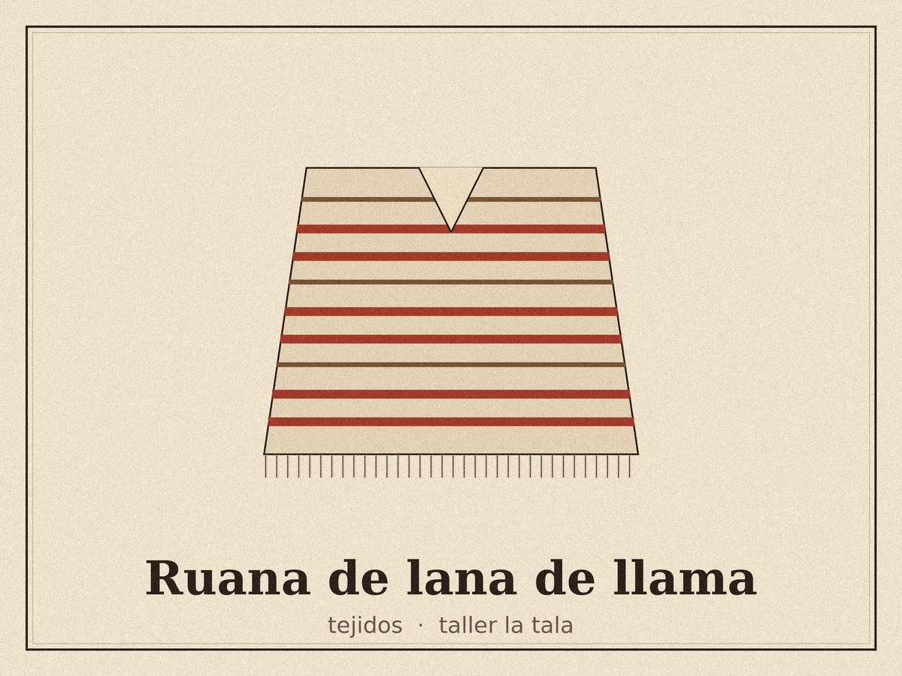
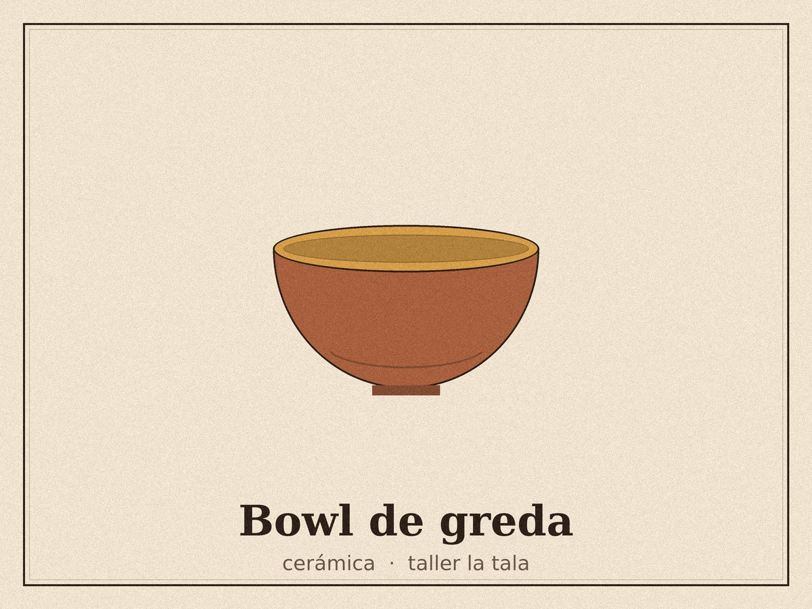
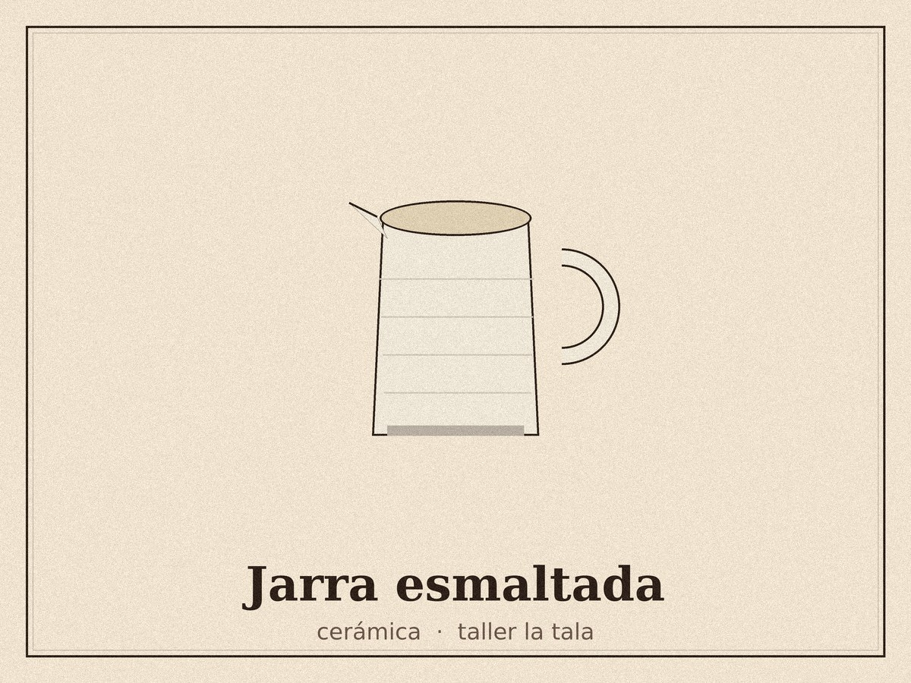
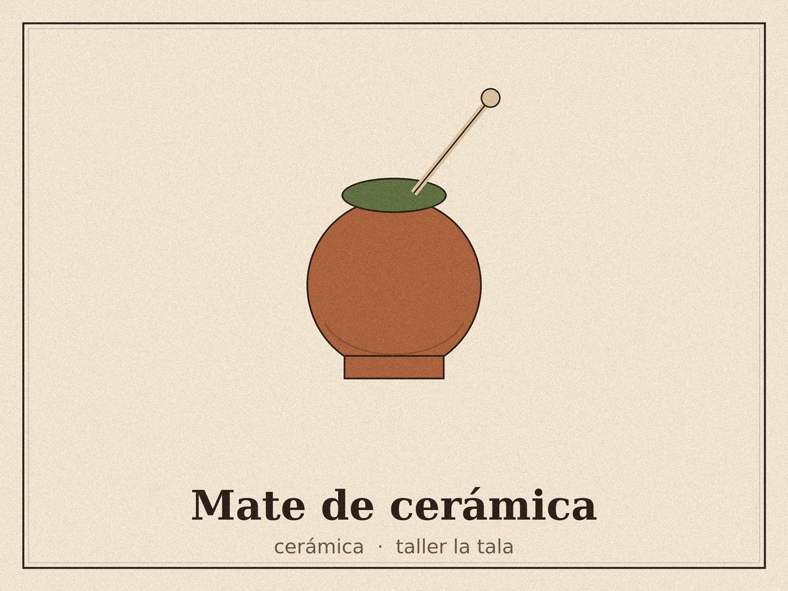
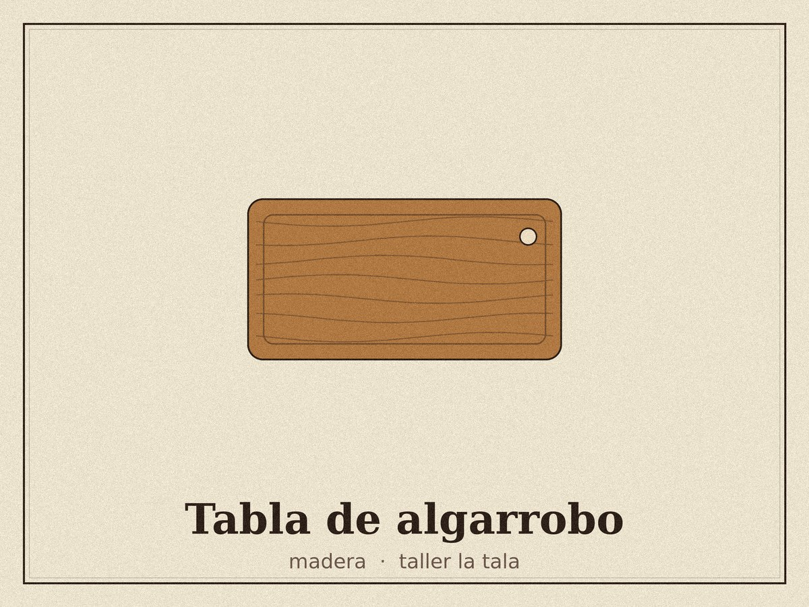
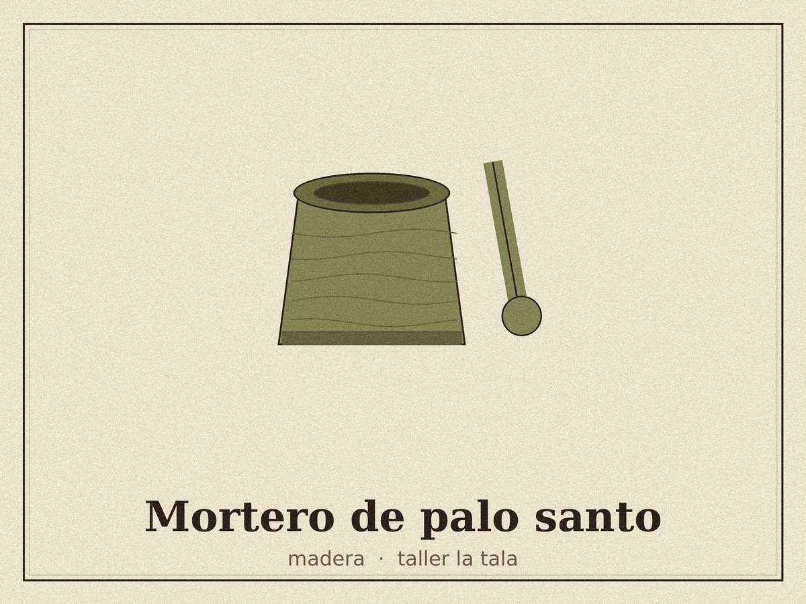
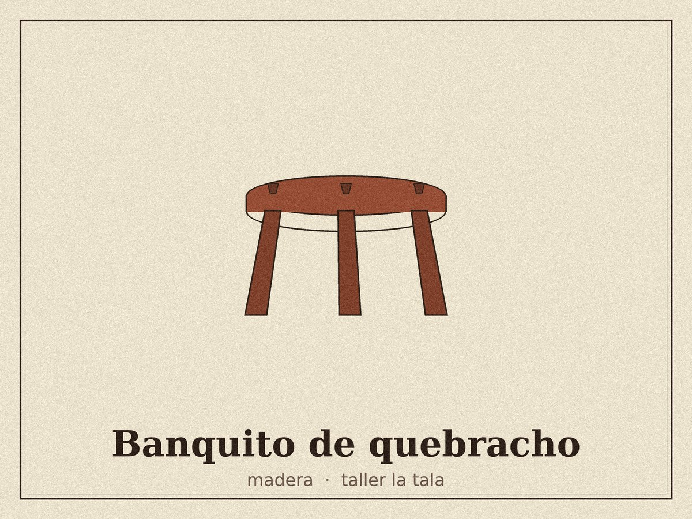
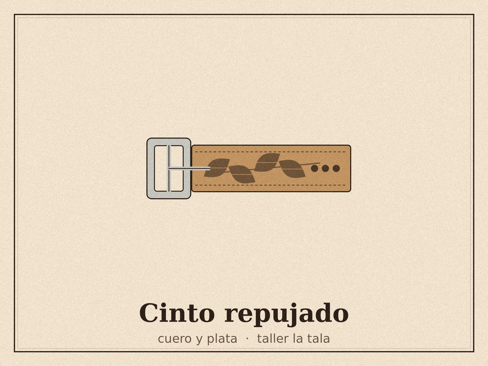
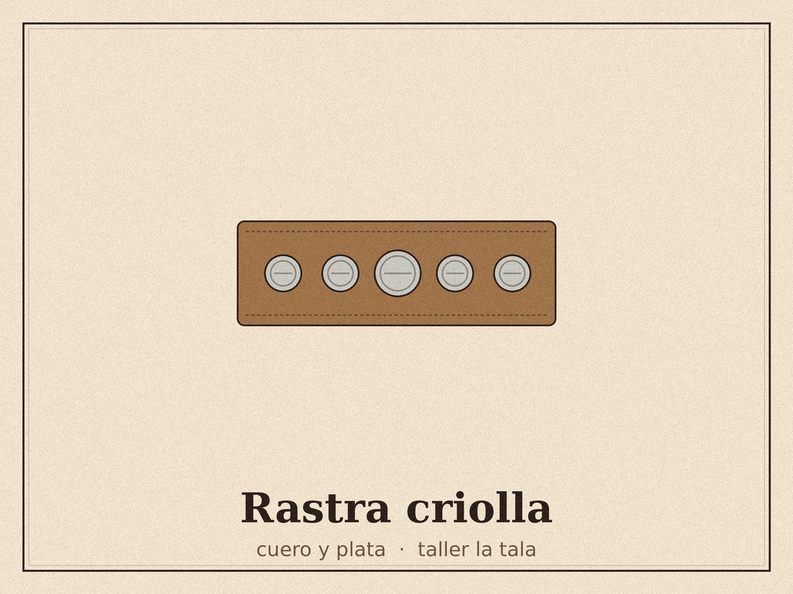
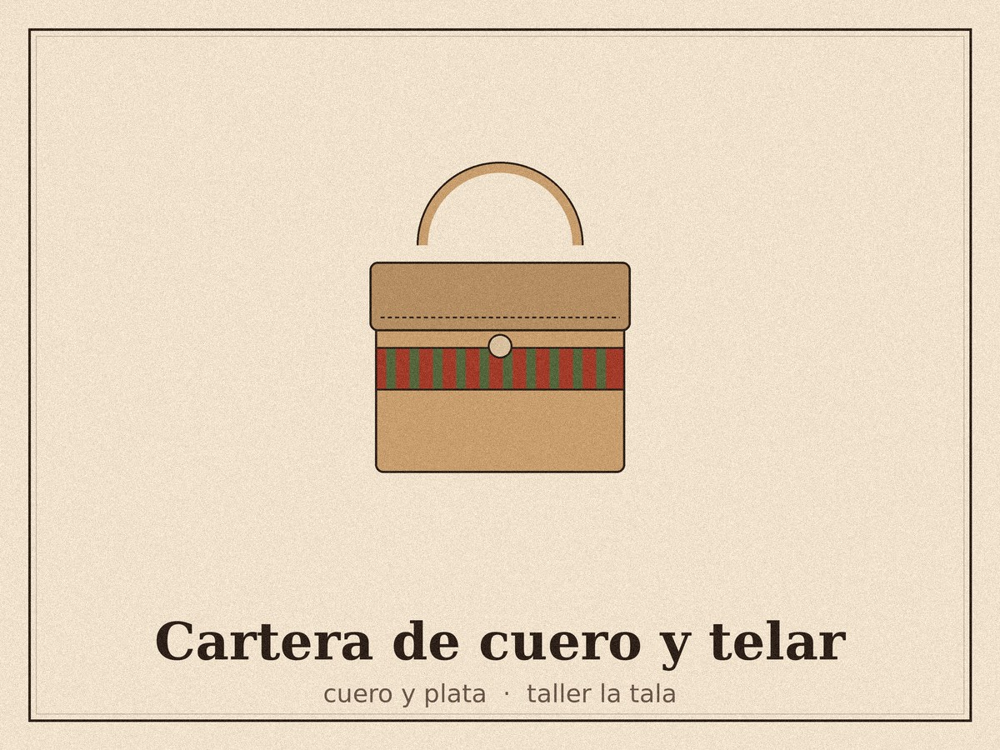

Desde 2016, en un galpón con tres telares y un horno a leña
Cada pieza sale
de una sola mano
Tejemos, torneamos y cosemos en cantidades chicas. Por eso ninguna ruana repite el mismo tramado y ningún bowl sale igual al anterior. Elegí una categoría y mirá lo que hay hoy en el taller.
Ver las piezasArtículos
Doce piezas disponibles, agrupadas por oficio.
Tejidos
Lana hilada a rueca, teñida con cáscara de cebolla y nogal.
Cerámica
Greda de Los Hornos, horneada a leña. Apta para horno y lavavajillas.



Madera
Maderas de poda y recorte de aserradero, terminadas con aceite de lino.



Cuero y plata
Cuero curtido al vegetal y alpaca trabajada en frío.



Información
Cómo trabajamos
Somos cuatro personas. Cada una maneja un oficio y firma lo que hace, así que el tiempo de una pieza depende de quién la esté haciendo: una ruana lleva dos semanas de telar, un bowl entra en la hornada del mes.
Si querés una medida, un color o una combinación distinta, se puede. Escribinos antes de comprar y lo charlamos.
Envíos y entregas
Enviamos a todo el país por correo, con seguimiento. A La Plata y alrededores llevamos nosotros los martes y los viernes.
También podés retirar por el taller con turno previo, y de paso ver los telares trabajando.
Cuidado de las piezas
La lana se lava a mano en agua fría y se seca en plano. La madera se repasa con aceite de lino dos veces al año. La cerámica va al horno y al lavavajillas sin problema.
Cada pieza viene con su ficha en PDF, la misma que abrís desde el botón «+ Info».
Contacto
Escribinos y te respondemos dentro de las 48 horas.
- Correo
- hola@tallerlatala.com.ar
- 221 123-4567
- Taller
- Calle 32 n.º 1480, La Plata
Visitas con turno, de martes a sábado - Ferias
- Todos los domingos en Plaza Islas Malvinas, de 10 a 18